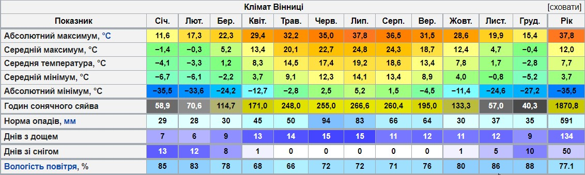
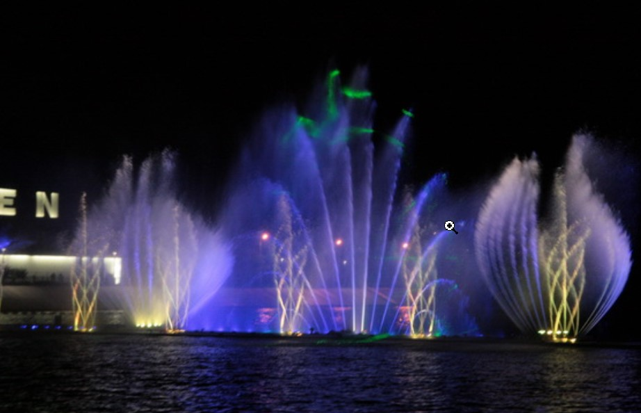

Вінниця лежить за 200 км від столиці України. Відстань залізницею до Києва становить 221 км, автошляхами — понад 265 км. До столиці можна дістатися швидким поїздом за 2 години, простим — за 2,5-3 години, автомобілем — за 3,5—4 години (автошлях E50, із котрим збігаються E583).
Місто розташоване в помірному кліматичному поясі. Для міста властиве тривале неспекотне, досить вологе літо та порівняно коротка м'яка зима. Середня температура січня −5,8 °С, липня +18,3 °С. Річна кількість опадів 638 мм. 3 несприятливих кліматичних явищ на території міста спостерігаються хуртовини (від 6 до 20 днів на рік), тумани в холодний період року (37—60 днів), грози з градом (3—5 днів). Тривалість світлового дня коливається від 8 до 16,5 годин.
дані на таблиці
У місті зведено 5 мостів через Південний Буг: Київський (з тролейбусним сполученням), Центральний (з трамваями і тролейбусами), Староміський, на Об'їзній дорозі, а також пішохідний на греблі в Сабарові.
Робота трамваїв та тролейбусів починається о 5:30 і закінчується о 00:00 (На 2022 рік переважна кількість маршрутів працює з 6:00 — 6:30 до 22.00 — 23:00) . Також для зручності пасажирів у 2012—2015 рр. було оснащено автобуси, трамваї та 45 тролейбусів безкоштовним Wi-Fi[43] (На 2022 рік вже не працює в жодному). З 1 травня 2020 року весь громадський транспорт, окрім маршруток, перейшов на безконтактну оплату проїзду[44][45]. Оплатити вартість проїзду є можливість за допомогою муніципальної картки вінничанина [Архівовано 22 жовтня 2020 у Wayback Machine.] або платіжної картки з технологією з NFC (чіповані картки), приклавши їх до валідатора. Також можна оплатити проїзд відсканувавши QR-код через мобільний додаток Приват24 чи відправивши платний SMS.
Запрошуємо всіх бажаючих відвідати відомий "Вінницький фонтан"
